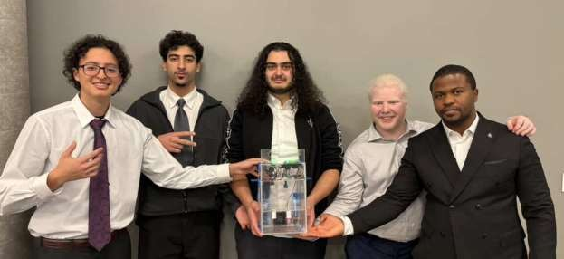
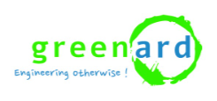
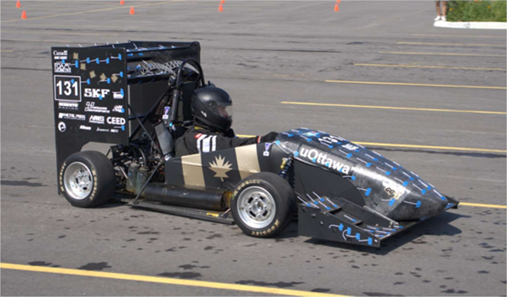

Zayd
Houachmi
Mechanical Engineering Co-op · University of Ottawa
I design parts in SolidWorks, test them in ANSYS CFD and on track, and model energy systems in Python, from Formula SAE wings to a wind farm's annual output.
Available for Winter and Summer 2027 co-op
Selected projects
Four projects: two for real clients, one with the Formula SAE team and one from my internship.

ZEIKU swab dryer
I led a five-person team through the design, fabrication and testing of a blood-sample swab drying system for the Ottawa Police: a sealed box that dries two swabs without cross-contamination and signals when each one is dry.
Read the case study →Clip-on visual shield
A light, foldable shield that clips onto prescription glasses and blocks distracting peripheral vision for a student with a sensory processing disorder. I designed it and built the full SolidWorks model.
Read the case study →
Wind farm energy yield
Internship at Greenard Consulting in Casablanca. I ran the full WAsP workflow on the software's Waspdale sample site, from a weather-station wind record to a turbine's annual energy, then wrote my own 8-module Python wake and energy-yield tool and validated it against WAsP.
Read the case study →
Formula SAE front and rear wings
On uOttawa's Formula SAE aerodynamics team, I designed the front and rear wings in SolidWorks. The team iterates the car's aerodynamics in ANSYS CFD, checks the predictions against track data and builds the parts in carbon fibre. The figures below cover the front wing and the full car.
Read the case study →Try the wake model
The Jensen wake model from the Python tool I wrote during my internship, running in your browser. Six 1 MW turbines in the same 3×2 layout I studied. Turn the wind and watch how much energy the front row steals from the turbines behind it.
Assumptions: rotor 54 m, thrust coefficient 0.8, generic 1 MW power curve (cut-in 3 m/s, rated 12 m/s), wakes combined by root-sum-square. One wind direction is the worst case: the rows line up and the wakes stack. A real site spreads its wind over many directions, which is why the case study works from a 12-sector wind rose.
Experience & education
Where I've learned, and what I did there. The full version is in my résumé (PDF).
BASc, Mechanical Engineering (Co-op)
University of Ottawa · Ottawa, ON- GNG2501 (Fall 2026): designed and modelled a clip-on visual shield in SolidWorks for a student client, with a six-test validation plan and a $50 budget.
- GNG1503 (Oct – Dec 2025): team lead on ZEIKU, a blood-sample swab drying system for the Ottawa Police Service. Delivered a working prototype that met the client's main objective.
Aerodynamics Team, Formula SAE
uOttawa Formula One Student Group · Ottawa, ON- Designed the front and rear wing assemblies in SolidWorks within the FSAE rules box and packaging constraints.
- Ran full-car CFD predicting 320 N of downforce at 65 km/h (CL −1.91). Iterated wings, undertray, diffuser and sidepods in ANSYS until the front wing reached CL −0.800 and CD 0.109.
- Validated CFD against suspension-travel data: measured downforce within 10% of prediction. Built surfaces by carbon-fibre layup.
Renewable Energy Intern
Greenard Consulting · Casablanca, Morocco- Ran a full wind-resource assessment in WAsP: resource grids, turbine siting, annual energy and wake-loss evaluation.
- Wrote an 8-module Python/Streamlit tool implementing Jensen and Ainslie wake models (Runge-Kutta), validated against WAsP.
- Documented the method and its limits in a full technical report in French.
Let's build something
I'm looking for a Winter or Summer 2027 co-op in mechanical design, aerodynamics, energy or renewables. If you need someone who will model it, build it and check the numbers, I'd like to hear from you.